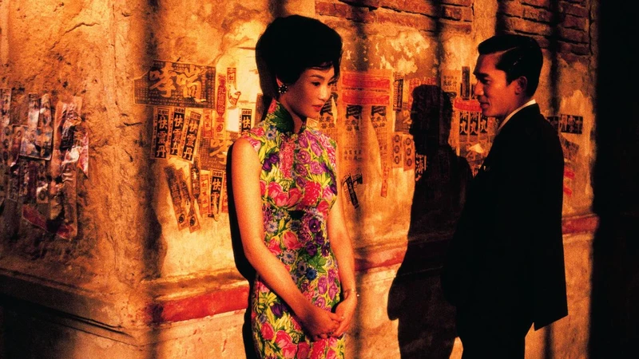

In the Mood for Love
花樣年華
THE CHARACTERS
Su Li-zhen
PLAYED BY MAGGIE CHEUNG
Chow Mo-wan
PLAYED BY TONY LEUNG
RUNTIME
98 MINUTES

ABOUT THE FILM
Set in 1960s Hong Kong, it tells the story of two neighbors who discover their spouses are having an affair. As they spend more time together, they slowly develop feelings for each other but struggle to express them.